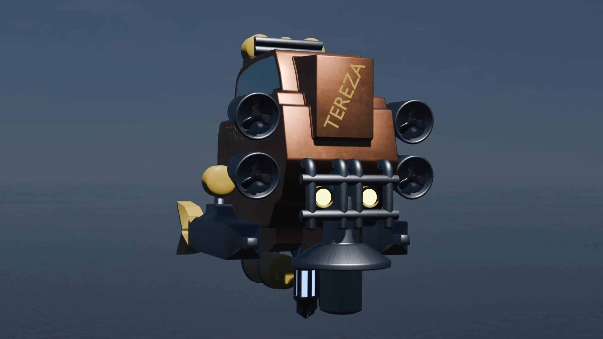
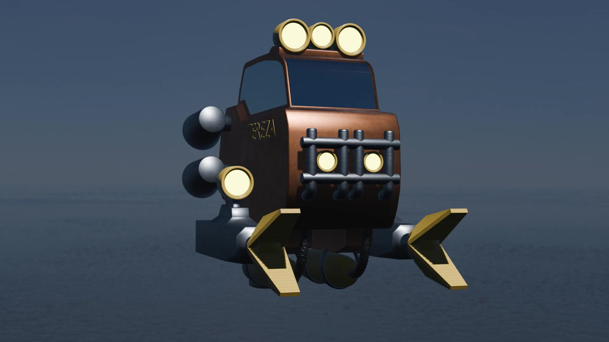

Мои работы
Рендеры, видео и 3D-модель проекта Underwater.
Underwater



3D-просмотр
Перетаскивайте для вращения.
Колесо мыши или жест — приближение.
Загрузка модели…
UNDERWATER / ИНТЕРАКТИВНЫЙ ПРОСМОТРВ 3D используются упрощённые материалы. Оригинальный вид — на рендерах.